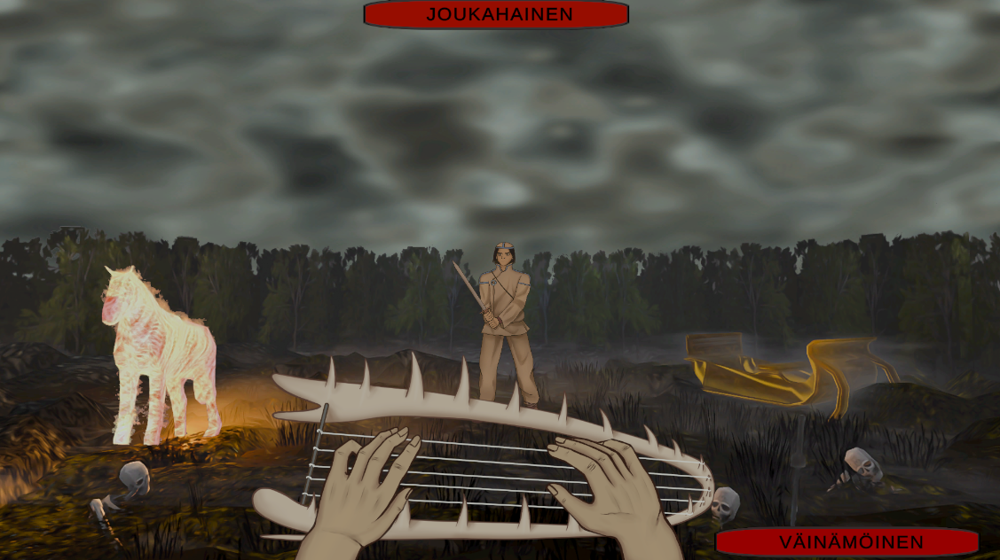
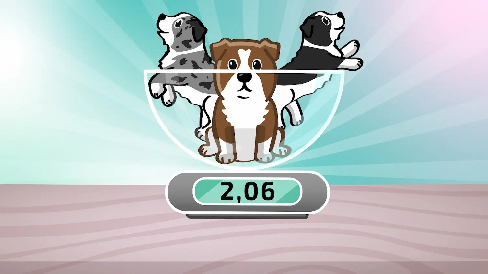
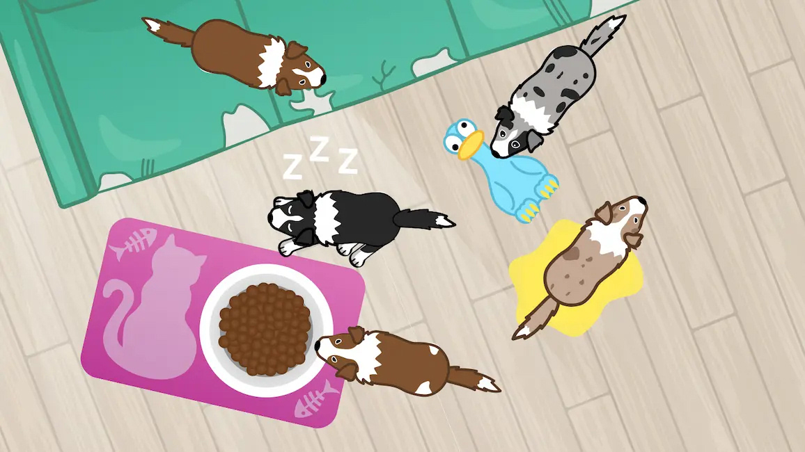
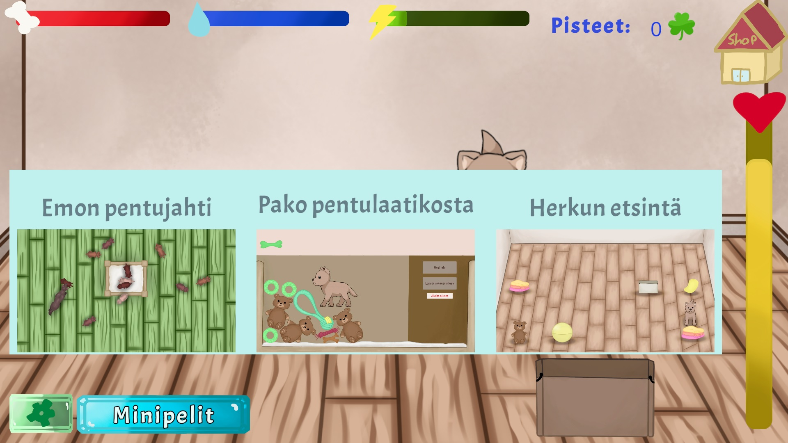
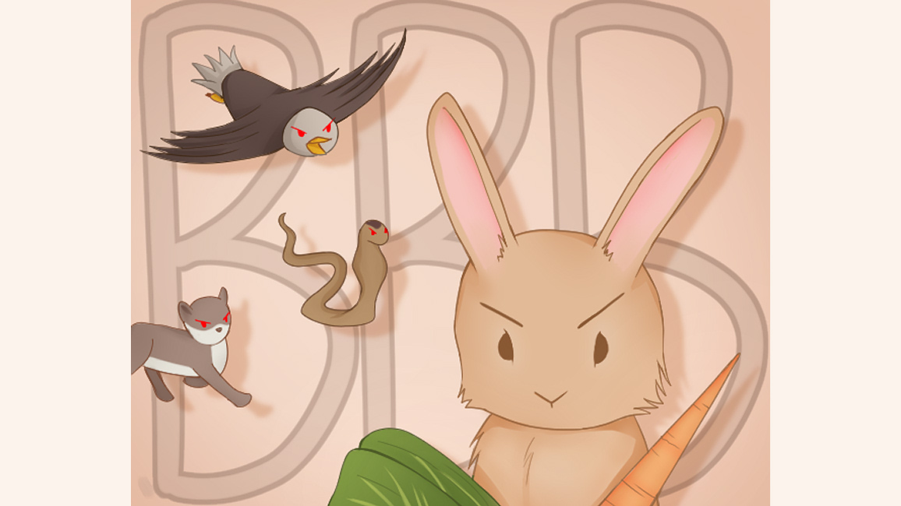

Nothingness
A visual novel mystery game where you have to help your friends to find your stolen souls and
escape nothingness.
(Unity, 2025-2026)

Below are my newest game projects, with links leading you to play each one directly in your browser.
A visual novel mystery game where you have to help your friends to find your stolen souls and
escape nothingness.
(Unity, 2025-2026)

Made for the Finnish Folk Game Jam. A typing game based on Kalevala where you have to sing
Joukahainen into the swamp. I did the character art for this one.
(Unity, 2026)

A minigame made for the puppy live hosted by YLE (Yleisradio, a Finnish Broadcasting Company)
where your task is to stop excited puppies from wreaking havoc in your apartment.
(Unity, 2024)

A minigame made for the puppy live hosted by YLE (Yleisradio, a Finnish Broadcasting Company)
where your task is to weigh puppies and prevent them from escaping.
(Unity, 2024)

A set of minigames in a Tamagochi-stype puppy game. Group project. I was responsible for the
minigames, the leaderboard, the start menu, the inventory, and the store.
(Unity, 2024)

A shooter game where you control a bunny and shoot the enemies with carrots and bok choys.
Parody of Space Invaders.
(Unity, 2023)